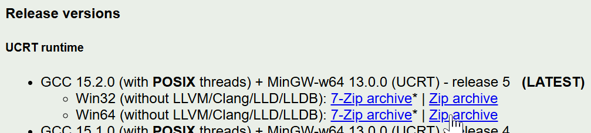

Installing GCC, CMake, GDB, and Git on Windows
Special thanks to Brecht Sanders, creator of WinLibs which enables us to install almost everything in one easy package. Cheers Brecht!
WinGet
Open a Powershell window (NOT cmd). Enter the following command:
winget install BrechtSanders.WinLibs.POSIX.UCRT Git.Git
If the above works, great! Now verify with the commands at the bottom of the page. If it didn't work, you can install things manually...
Manual Installation
- Visit this URL: WinLibs.com/#download-release
- Download the latest Win64 release - it should have POSIX threads, UCRT.

- Open the downloaded file. It should contain a single folder, called "mingw64". Extract that folder to a place of your choosing - I recommend the root of your main drive (C: in most cases).
- Test that the downloaded GCC works by opening a Powershell window and type the following command (change the directory if you used something different):
C:/mingw64/bin/gcc.exe --version
You should see something like the following:
gcc.exe (MinGW-W64 x86_64-ucrt-posix-seh, built by Brecht Sanders, r5) 15.2.0
Copyright (C) 2025 Free Software Foundation, Inc.
This is free software; see the source for copying conditions. There is NO
warranty; not even for MERCHANTABILITY or FITNESS FOR A PARTICULAR PURPOSE.
- In the Windows search bar, type "env" and select "Edit the system environment variables."
- Click "Environment Variables."

- Select "Path" and click the "Edit..." button.

- Click "New" and copy-paste the full directory containing gcc.exe - if you copied the mingw64 folder to the root of your C: drive, this will be "C:/mingw64/bin"
- Click OK on each window to close them.
- Close any open Powershell windows and open a new one. Type:
gcc --version
If you got the same output as before when you typed the full directory, then MinGW is installed correctly. Lastly, we need Git.
- Visit the GitForWindows.org website and download the installer.
- Run the installer and follow the prompts.
- When complete, open a Powershell and type the following command:
git --version
Verify the Installation
Check your installation with the following commands (press enter after each one and check the output):
gcc --version
cmake --version
gdb --version
git --version